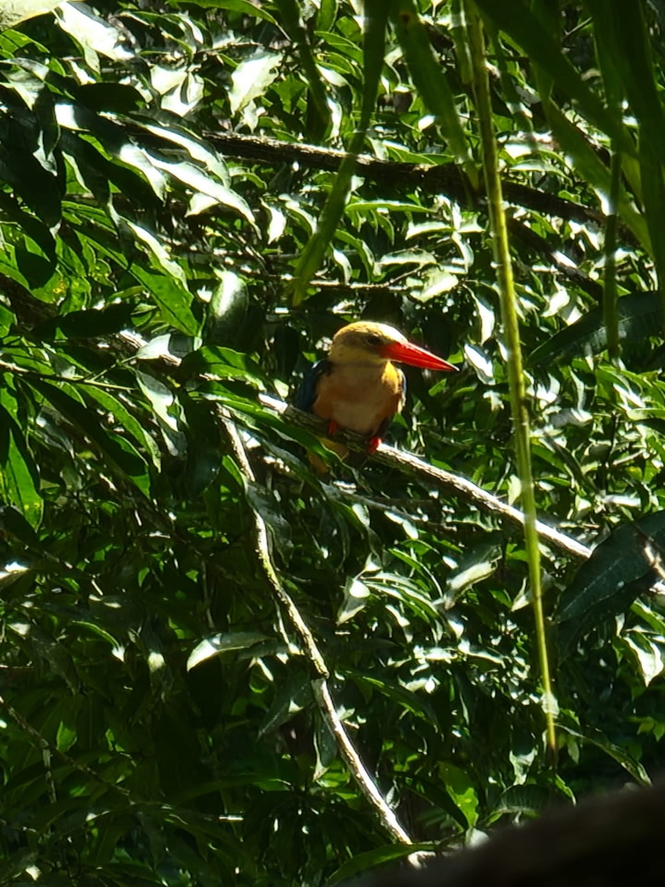

Fascinating Malaysia Biodiversity - Research Motivation

Introduction
The story all starts from here, in east Malaysia Borneo island. In Chinese, there is an old quote saying that “天地有大美而不言” by the Chinese philosopher Zhuangzi, which means the universe and the mother earth have their natural beauty, but they won’t say any word to others. There is such a word in English: Extraordinary meaning beyond normal and surpassing ordinary. Also, in Bahasa Melayu, “Luarbiasa” contains the same meaning: luar means further away, and biasa means ordinary.
The first time I visited the tropical rainforest, I was amazed by the HUGE things there. For instance, anything is big here: trees, leaves, flowers, fruits, and creatures (like ants, orangutans, birds, and so on). My 5-day rainforest journey, organized by Society of Wilderness Malaysia, began from the 1st to 5th March 2023, and this also motivates me to engage more in nature conservation efforts.
Insights
There are many beautiful parts of the Malaysian rainforest. In this article, I am going to talk about three parts: “Tree Canopy,” “Creatures,” and “My Observation.”
Malaysia is well known for its rich biodiversity. Let’s be ready and dive into it together!
Tree Canopy
When it comes to rainforests, the lungs of the earth and the “broccoli” tree pop up in my mind.

Usually, the tree structure of a rainforest can be divided into emergents, canopy, under canopy, and shrub layers. Thus, most reserve areas set up a canopy walkway to make it easier for people to observe nature; as Figure 2 displays, the trunks of the trees are typically thin in the rainforest. Let me give a quick overview of the Rainforest Discovery Center (RDC) in Sepilok. Situated on the edge of the Kabili-Sepilok Forest Reserve in Sandakan, RDC has been operating since 1996, focusing on environmental education. Today, it’s a 3-in-1 park catering to wildlife, bird, and plant enthusiasts, offering a glimpse of Borneo’s distinctive biodiversity for nature lovers and bird watchers.


There are some interesting points to note from Figure 3. Tropical canopies, reaching heights of up to over 50 meters (about 16-17 floors high), showcase their competitive nature in absorbing sunlight for rapid growth. This is reflected in their thin trunks, making them become giant umbrella-like forms. The canopy layer, constituting the second rainforest level, serves as a shield, intercepting light penetrating from the emergent layer above. Approximately 75-98% of light is absorbed here, effectively blocking it from reaching the lower layers.
Moreover, the canopy layer acts as a natural reservoir, capturing most rainfall, which limits the amount that reaches the plants in the lower strata. Therefore, life predominantly thrives in this layer, while vegetation below relies on the scant rainfall that trickles down from above.
For more study, please refer to Rainforest - A rainforest is an area of tall trees and a high amount of rainfall by National Geographic.
Unique Creatures
Biodiversity is undoubtedly amazing in Malaysia, which is also the most exciting part of this nature observation journey. In the following, I will show some pictures of signature creatures. As I was using binoculars as my second eye to enjoy the beauty of nature, it would be more engaging to look through from my point of view and describe how amazing it is in this beautiful heaven.

The Kinabatangan River (Malay: Sungai Kinabatangan) stands as Malaysian second-longest river, stretching across 560 kilometers from its origins in the southwest Sabah mountains to its convergence with the Sulu Sea, east of Sandakan. This region is renowned for its remarkable biodiversity, boasting a rich tapestry of natural wonders, including limestone caves nestled in Gomantong Hill, expansive dryland dipterocarp forests, lush riverine and freshwater swamp forests, picturesque oxbow lakes, and the brackish mangrove swamps hugging the coastal areas.
Note that images were taken through binoculars. Please bear with the quality. üòÉ


We spent two days on the Kinabatangan River to observe the unique creatures in Malaysia. The first two superstars, the orangutan and proboscis monkey, are well known worldwide and stand as symbols for Malaysia. I will showcase the pictures of these two creatures in the conservation area to compare each other.

Hornbills are known as Malaysia National Birds. There are 10 species of hornbills found in Malaysia, and they typically come together as a couple. The Borneo elephant is found on the island of Borneo in Malaysia. They are a type of Asian elephant, but smaller in size, about half the size of an Asian elephant. Borneo elephants inhabit tropical rainforests and swampy areas, feeding on leaves, grass, and fruits.


Sun bears, also called the ‘Malayan Sun bear,’ are the smallest member of the bear family with a long tongue and experience in climbing trees. They lumber through the forests by night, snacking on fruits, berries, roots, insects, small birds, lizards, and rodents.
From what I heard from Calvin Soh, the President of the Society of Wilderness Malaysia, we can find more than 20 species of kingfishers across Malaysia if we keep putting effort into observing nature.

My Observation
Deforestation in Borneo Island
Trees play an essential role in carbon storage
In my research, carbon storage from canopy
Satellites Imageries can help in this matter
Summary
Malaysia is uniquely blessed. It is located at the intersection of East and West, including Chinese, Islamic, Indian, and Western cultures. There are many cultural and natural resources around here.
Nature is our teacher. We live here, grow here and learnig from mother earth.